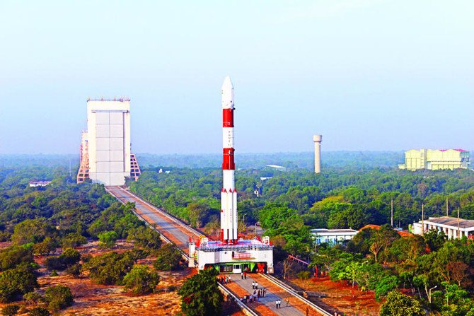

Science and technology
* Science and technology has a profound impact on
all of humanity’s activities.
Science and technology inventions and
discoveries, including the theory of the origin of the
universe, the theory of evolution, and the discovery
of genes, have given humanity many hints relating
to human existence from civilized and cultural
points of view. Science and technology have had an
immeasurable influence on the formation of our
understanding of the world, our view of society, and
our outlook on nature.
The wide variety of technologies and science
discoveries produced by humanity has led to the
building and development of the civilizations of
each age, stimulated economic growth, raised
people’s standards of living, encouraged cultural
development, and had a tremendous impact on
religion, thought, and many other human activities.
The impact of science and technology on modern
society is broad and wide-ranging, influencing such
areas as politics, diplomacy, defense, the economy,
medicine, transportation, agriculture, social capital
improvement, and many more. The fruits of science
and technology fill every corner of our lives.
The hundred years of the twentieth century have
been called the “century of science and
technology,” the “century of war,” and the “century
of human prosperity,” among other expressions.
Science and technology have thus far brought
humanity immeasurable benefits. In the twenty-first
century, dubbed the “century of knowledge” and the
time of a “knowledge-based society,” it is hoped
that the diverse potentials of science and technology,
built upon the foundation of the hard-won science
and technology of the twentieth century, will be
used to solve the serious issues faced by humanity,
such as global environmental problems. Moreover,
it is also important to hold the firm belief that
science and technology must be faithfully passed on
to future generations as an irreplaceable asset of
humanity, driven by the trust and support of the
public.
Science and technology will most likely continue
to be regarded by humanity as an invaluable
commodity. However, the relationship between
science and technology and society is assuming
many shapes with the changing times. Against the
backdrop of the historical turnaround in the world
order that came with the collapse of the U.S.-Soviet
cold war structure, and with accelerating scientific
and technological progress, as exemplified by the
life sciences and IT, it is no exaggeration to say that
society is transforming abruptly and daily becoming
more complex. This transformation appears in
public opinion polls as changes in public awareness
of science and technology and heightened public
concern over the safety and security of society.

In the present, squarely addressing the
relationship between science and technology and
society is an essential challenge to the sound
development of science and technology, one which
it is important to continue addressing in the future
based on historical and civilized perspectives, while
also maintaining a deep awareness of the needs of
the times.
Sustainable development is widely recognized as an existential challenge. To address it, humanity needs to change its ways. However, people seem slow to act, not always understanding and often denying environmental imperatives, creating substantial social and psychological barriers. Social inertia and denial have been allegedly amplified by a public discourse increasingly distrustful of science. But is this discourse a rejection of science or an erosion of trust in how science is applied? The paper examines the main differences between environmental science and technology, reviews how the wider science-technology convergence has affected them and evaluates potential implications for sustainability challenges.
We question whether the “convergence” between environmental science and technology, could be behind the growing public dissatisfaction and distrust of environmental science and policies. Although environmental science plays a role in enabling understanding and communicating complexity, technology requires political, social and economic skills, beyond conventional disciplinary expertise. To avoid putting academic freedom at risk, environmental technologists, a new breed of professionals, should have a clear understanding of scientific capacity and uncertainty and be able to engage with stakeholders, policy makers and the public to design integrated, interdisciplinary and holistic solutions, and also better define the many environmental problems we face.